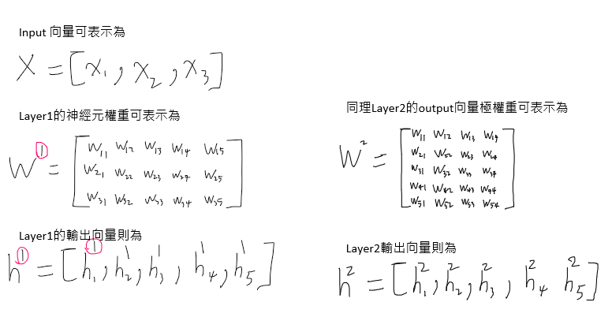

2021-08-22 Machine Learning algorithm Multilayer perceptron(MLP) Feed Forward表示及說明 這篇是對Multilayer perceptron(MLP)概念與符號釐清 Multilayer perceptron(MLP)中文叫多層感知機，也就是類神經網路最基本的架構類型，如圖所示  徹底了解計算原理，以及每個符號引數代表的意思非常重要，這樣在看其他像是Backpropagotion的推導，或是其他更進階的網路架構才不會混淆 Older KNN(K Nearest Neighbors) 分類演算法